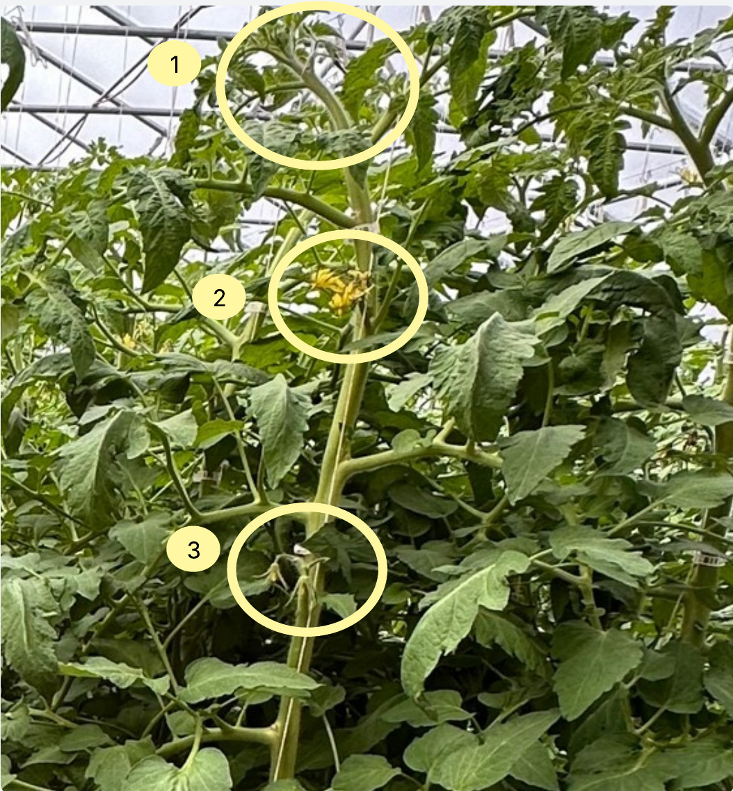
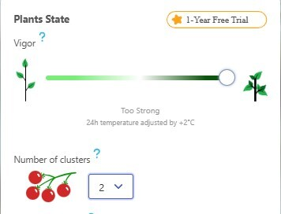

Episode 5 of 15 · May 29, 2025
Increasing fruit load as soon as possible
Where we see the newly set fruits, we should be seeing almost half-grown tomatoes.
Drew & Allison transplanted their tomatoes in early April, and they’re now harvesting their first slicers. They’re ahead of us in terms of ripening time, well done!
Let’s take a look at some photos of the plant to see what the future harvest looks like.

- Stems are far too thick
- Naruto flowers in the flowering cluster = late pollination
- Clusters are setting fruit low in the plant = another sign of late pollination
We don’t see it, but leaders bear 13 fruits per leader. As a reference, we are currently at 20.
In circle 3, we should be seeing half-grown tomatoes, rather than newly set fruits!
We still need to focus on converting the plant’s photosynthesized energy into fruit. Thick stems are wasted energy!
Use the extra energy for future harvests
2 weeks ago, we increased the temperature using the vigor slider to accelerate cluster generation. Judging by the stem thickness, we can accelerate it even more.
To do so, we’ll cheat Orisha a bit. We’ll tell it the plants are Too Strong and only have 2 clusters with fruits. Based on this information, Orisha will maintain the greenhouse warmer and accelerate growth.

Pollination to fix fruit load ?
We’re seeing Naruto flowers - Flowers with petals stretching backward, which is a sign that pollination is not effective. Fruit setting so low on the plant also confirms it .
We’ll follow up with Drew to see what has changed in the pollination process since we talked about it a few weeks ago. Maybe we’ll find the issue.